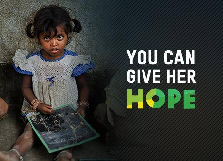

The Effects of Poverty on Education
In many countries where ChildFund works, school is free, but there are additional costs for uniforms, books and transportation, especially in rural areas, where a student may travel more than an hour each way by public bus to school. The expenses may be too much for a family to pay, on top of the money the family loses by not sending a child to work or even marrying off a daughter. Some countries’ governments also spend a lower share of their gross domestic product (GDP) on education, which makes public education less available (particularly to the poor) and of lower quality. Overcrowded classrooms, broken desks, no computers — all are common sights in school districts with budgets that don’t meet students’ needs. Teachers burn out or may be unqualified to teach certain subjects. All of these challenges create a serious disadvantage for children growing up in poor households.
The Importance of Education in Developing Countries
The importance of education in developing countries cannot be overstated. Education can be the catalyst needed to pull families and communities out of the cycle of poverty. Knowledge gives children the power to dream of a better future and the confidence needed to pursue a full education, which in turn will help generations to come. Education also makes a significant difference for adults, particularly when it applies to day-to-day life, including nutrition, healthcare and gender equity. When adults learn, they become role models to their children, who also wish to learn.